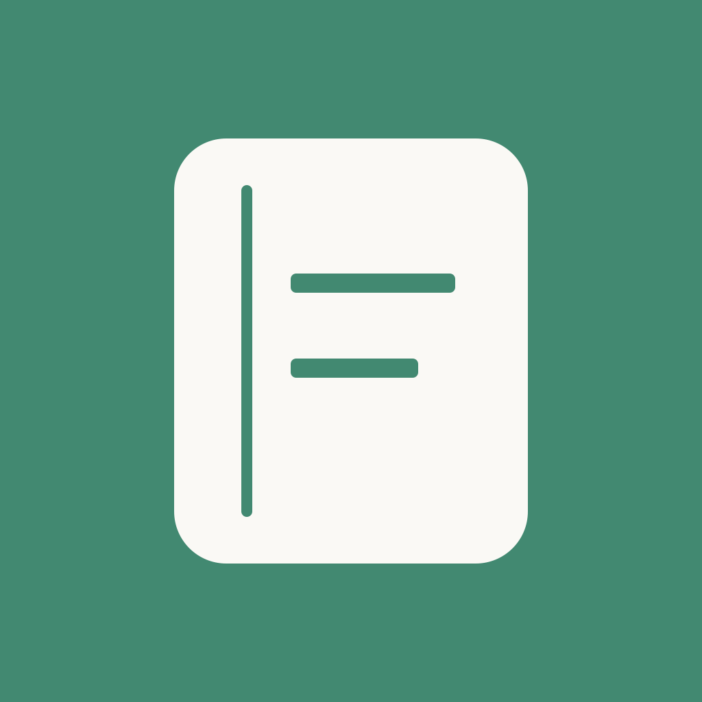

<!doctype html>
<html lang="zh-CN">
<meta charset="utf-8"><meta name="viewport" content="width=device-width,initial-scale=1">
<title>余记 · 已定稿图标</title>
<style>
body{margin:0;background:#f6f5f0;color:#173d2e;font:16px/1.6 system-ui}main{max-width:760px;margin:auto;padding:36px 24px}h1{font-size:26px;margin:0 0 8px}p{margin:0 0 24px}a{color:#286549}.hero{width:min(320px,80vw);display:block;margin:28px auto 40px;border-radius:22.5%}.sizes{display:flex;gap:28px;align-items:flex-end;flex-wrap:wrap;padding:24px 0}.sizes figure{margin:0;text-align:center}figure img{display:block;margin:0 auto;border-radius:22.5%}figcaption{margin-top:8px;font-size:13px}.dark{background:#1b2420;color:#efeee7;padding:24px;margin:24px -8px;border-radius:16px}.dark .sizes{padding:0}footer{font-size:14px;color:#526257;margin-top:24px}*{box-sizing:border-box}
</style>
<main>
<h1>余记 · 账本与钱币</h1><p>2026-10-08 用户选定。墨绿账本、金色人民币钱币、暖白底。</p>

<div class="sizes">
<figure><figcaption>120 px</figcaption></figure>
<figure><figcaption>60 px</figcaption></figure>
<figure><figcaption>40 px</figcaption></figure>
<figure><figcaption>旧图标</figcaption></figure>
</div>
<div class="dark"><div class="sizes">
<figure><figcaption>深色背景 · 60 px</figcaption></figure>
<figure><figcaption>40 px</figcaption></figure>
</div></div>
<footer>以上为浏览器尺寸预览，外围圆角只用于展示；工程源图是完整方形。<a href="prompt.md">内置 imagegen 提示词</a> · <a href="README.md">资源与验收记录</a></footer>
</main></html>
